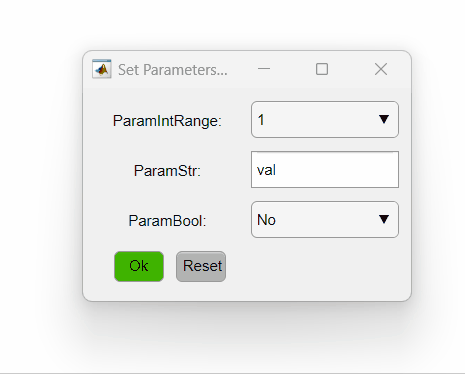

The umIToolbox was designed to allow the integration of custom functions to its pipeline management system. In this section, we describe how the toolbox identifies the analysis functions and how to adapt your code to create a custom function.
All functions are located under the Analysis folder in the toolbox path and are organized into different subfolders separated by category ('Data import', 'Data export','Filters' etc). The PipelineManager class reads the content of all .m files inside the Analysis folder and identifies the compatible functions based on a set of keywords representing the function's inputs and outputs. Here is the list of all valid keywords:
| Keyword | Description |
|---|---|
| data | numeric array (format single) OR structure with input data |
| metaData | structure containing the meta data associated with data (if data is a numeric array) |
| RawFolder | Path to the folder containing the raw data |
| SaveFolder | Path to the folder containing the transformed data |
| opts | structure containing extra parameters for the function |
| object | handle of the protocol object (Subject, Acquisition or Modality) |
| Keyword | Description |
|---|---|
| outData | numeric array (format single) OR structure with output data |
| metaData | structure containing the meta data associated with outData (if outData is a numeric array) |
| outFile | cell array of characters containing the file names of files created in the function |
Limitations
The umIToolbox deals with numeric data with distinct dimensions (from scalar to multidimensional arrays). The data can be stored in binary files with a .dat format or as a .mat file. The .dat files are usually dedicated to store the imported raw data and preprocessed data (e.g., raw imaging data that was filtered and normalized). The .mat files are dedicated to store the results of the analysis performed in the preprocessed data when a significant dimension reduction is observed. For instance, for an image time series, a function that calculates the average response amplitude of a subset of pixels should be stored in a .mat file. In this particular case, the original data consists of a 3-dimensional array while the average response amplitude consists of a single value (scalar) associated with a part of the array (i.e., region of interest).
In the umIToolbox app, the results of the analysis functions stored in .mat files can be grouped for visualization and statistical comparisons.
The data saved in a .dat format must have an associated .mat file containing the meta data. In contrast, the .mat files with the analysis results contain both the data and meta data (click here to see a description of the .mat file variables).
A set of auxiliary functions (located in the subFunc folder) is dedicated to the generation of the files. Here is a list of auxiliary functions necessary for saving and loading the data files used in umIT (please, check each function's docstring for details):
| Function Name | Description |
|---|---|
| genMetaData | creates a structure with meta data |
| save2Dat | saves numeric data to a .dat file |
| genDataMetaStructure | merges the data and meta data into a single structure. Use this function to create the data to be saved as a .mat file |
| loadDatFile | loads the data from the .dat file and meta data from its associated .mat file into memory |
The dimensions of the data are listed in a cell array of single capital letters stored in the variable dim_names in the meta data structure. This variable is used by different classes and apps in umIT to identify the type of recording and to locate the dimensions to perform calculations on.
The dimension name list is stored in the dimension_names.mat file in the subFunc folder. Here is the current list:
| Dimension Name | Description |
|---|---|
| X | X axis from an imaging data |
| Y | Y axis from an imaging data |
| Z | Z axis from a multi-stack imaging data |
| T | time dimension |
| S | dimension used in seed-pixel correlation maps indicating the "S"eed index |
| E | event dimension. Indicates the event(or trial) |
| P | stands for "P"ixel . Used to store pixel values without any spatial (X,Y) information |
| F | stands for "F"requency dimension. Used to indicate the frequency in Fourier-transformed datasets |
| O | stands for "O"bservation. This is the first dimension used in data created with the genDataMetaStructure function |
The funcTemplate.m file located in the Analysis folder contains some templates that can be used to build your custom function. Here, we go through the basic rules that need to be followed to successfully create and run a function in umIT.
As stated above, the toolbox is capable of recognizing the functions that contain input and output variables with specific names (keywords listed above). Some input variables such as opts, can be passed as a variable-lenght input argument (varargin):
function [outData, metaData] = MyCustomFcn(data,metaData,varargin);
This should be the first part of the functions code (right below the function's docstring). The PipelineManager class reads this section to create the pipelines and set the function's parameters passed using the opts structure (if applicable). There are two default parameters that need to be set: the output file name(s) and the function's optional parameters (if applicable).
Important
Each variable in the "Default" section should be stated should be stated in a single line. Line breaks using [...] is not allowed:
% This is not allowed:
default_Output = {'file1.dat',...
'file2.dat'};
% Do this instead:
default_Output = {'file1.dat','file2.dat'};
If the function output is a outData, means that there is a single data is created. In this case, the default_Output variable is a the name of the file with it's .dat or .mat extension:
function [outData, metaData] = MyCustomFcn(data,metaData,varargin);
% MYCUSTOMFCN. This is the docstring.
% Defaults:
default_Output = 'myFileName.dat';
If your function saves multiple files, list all possible file names in the default_Output variable as a cell array:
default_Output = {'myFileName1.dat', 'myFileName2.dat', 'myFileName3.dat', 'myFileName4.dat'};
Note
The list of the files created during the execution are not necessarily the same as the list in default_Output. Use the output variable outFile to store the actual list of files created.
Functions using the opts parameters structures, need to set the default options. Two structures need to be created: default_opts and opts_values. The default_opts structure contains the default values for each parameter of the function. The opts_values contains the range of possible values for each parameter. You can use the opts_values structure to limit the type of values (characters, numeric) and their range (list of characters, positive/negative values, finite range of numeric values etc.)
The way in which the parameters are displayed in the GUI from PipelineManager is dependent on how you set up the field values in the opts_values structure. Here is an example:
default_opts = struct('ParamIntRange', 1,'ParamStr', 'val','ParamBool', false);
opts_values = struct('ParamIntRange', [1:5],'ParamStr',{{'val'}},'ParamBool',[false, true]);
The code above sets three different parameters. The first is an integer that varies from one to five, the second is a string and the third is a boolean. The PipelineManager will show the options as so:

Here is a summary of different ways of setting the opts_values field values and how they will be interpreted by PipelineManager:
| Type | Syntax | GUI element |
|---|---|---|
| List of numbers | [-1, 0, 1, 2, 3] | Drop-down menu |
| Range of numbers (float) | [-Inf,Inf] | Numeric edit field (without limits) |
| Range of positive numbers (float) | [eps,Inf] | Numeric edit field (with inferior limit) |
| Range of non-negative numbers (float) | [0,Inf] | Numeric edit field (with inferior limit) |
| List of words (single-selection) | {{'Option1','Option2','Option3'}} | Drop-down menu |
| List of words (multi-selection) | {{'Option1','Option2','Option3'}'} | Check box list. *Just transpose the cell array to change from single to multi-selection |
| Boolean | [false,true] | Drop-down menu with "No" and "Yes" for false and true respectively |
| Text/numeric input | {{'def'}} | Edit field. Cell array with single item. *This can be used to input either numeric OR text. Single word or scalar values ONLY. |
Be sure to create or update all meta data associated with the created/processed data. For functions that generate .dat files, use the genMetaData to create the meta data structure. For functions that generate .mat files, use the genDataMetaStructure function.
Here is an example of a function that creates a .dat file:
% Create data:
data = ...;
% Set the data dimension names
data_dimensions = {'Y','X','T'};
% Create the meta data structure:
metaData = genMetaData(data,data_dimensions);
For functions that create .mat files, the output data is a structure containing the data from one or more observations (e.g., regions of interest). There area two ways of formatting the data: if the function performs a single measure, you can store the data in a cell array as so:
% Create a list of names of regions of interest:
obsID = {'ROI1','ROI2','ROI3','ROIn'};
% Calculate the data for each region of interest:
dataOut = {10,12,11,30};
% Set dimension names:
dim_name = {'O'}; %
% Create the output structure.
outData = genDataMetaStructure(dataOut,obsID,dim_name,metaData);
For multiple measures, you can store the data in a structure and set the fieldnames with the measure ID:
% Create a list of names of regions of interest:
obsID = {'ROI1','ROI2','ROI3','ROIn'};
% Calculate different measures for each region of interest:
dataOut = struct('measure1',[],'measure2',[],'measure3',[]);
for ii = 1:length(obsID)
dataOut(ii).measure1 = randi([0,10])
dataOut(ii).measure2 = randi([0,10])
dataOut(ii).measure3 = randi([0,10])
end
% Set dimension names:
dim_name = {'O'}; %
% Create the output structure.
outData = genDataMetaStructure(dataOut,obsID,dim_name,metaData);